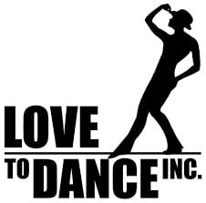

I do productions with JAC, such as Wizard of Oz. Working with JAC has helped me make friends with the same interests, and bond with those I already know. JAC taught me to prepare and go for bigger parts each time. JAC inspired me to start dance and voice lessons, as well as encouraging me to pursue my dream of being on Broadway.
Love To Dance

Love To Dance is where I take dance lessons. I take musical theatre dance class every Tuesday. Dance has taught me to push on, even when the going gets tough. I learned not to compare myself to the other dancers in the class, since we all have our different strengths and stretches when it comes to dance.
Voice Lessons
I take voice lessons every thursday. Voice lessons have taught me that there is no "impossible". Even when things are difficult and seem impossible to do, if you keep trying and get the right help, the impossible is very much possible.